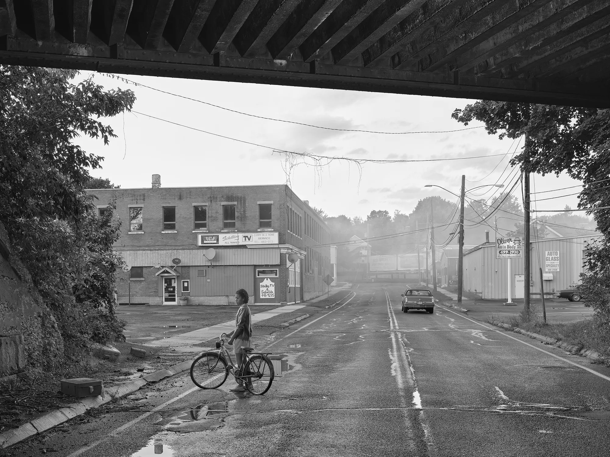
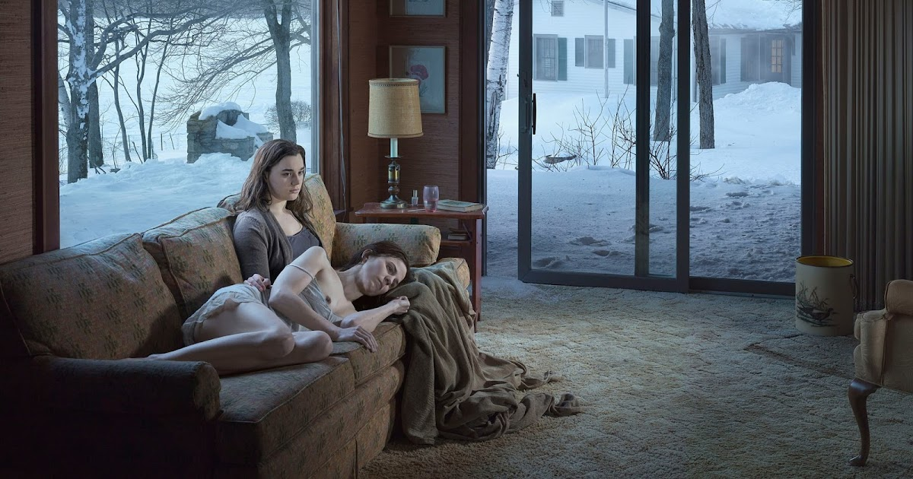
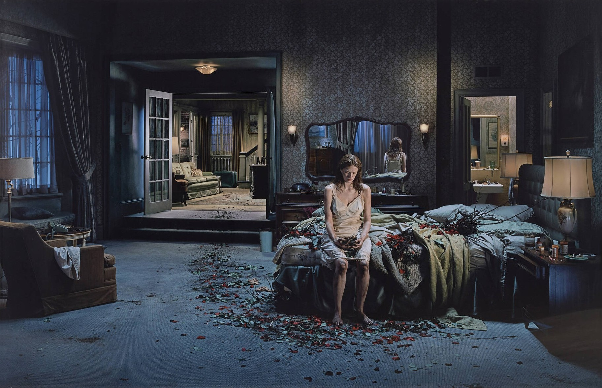

Eveningside (2021-2022)
His most recent body of work, Eveningside is a series of black-and-white scenes of America in an unidentifiable era,depicting solitary figures, often captured through a complex interplay of mirrors, storefronts or places oftransition: bridges, porches, mini-markets and hardware stores.. The final installment in a trilogy he has beenworking on since 2012, the twenty panoramic photographs are characterized by their disturbing clarity and twilight mood.

An Eclipse of the Moths (2018-2019)
These pictures are a meditation on brokenness, a search, a longing, and a yearning for meaning and transcendence.The figures are surrounded by vast decaying industrial landscapes and the impinging nature―and there’s a certainunderlying suggestion of anxiety. But I hope in the end the theme of nature persisting, and of figures seeking outlight, offers hope for renewal, even redemption.

Cathedral of the Pines (2013-2014)
Cathedral of the Pines is a series of 31 large-format photographs by American artist Gregory Crewdson, created between 2013 and 2014 in Becket, Massachusetts, and inspired by his childhood memories and a personal period of difficulty. The images feature motionless figures in intimate, ambiguous scenes set in both natural forest landscapes and domestic interiors, evoking the style of 19th-century paintings while exploring themes of connection, isolation, and the search for meaning.

Beneath the Roses (2003-2008)
In these twenty “pointedly theatrical yet intensely real panoramic images, Crewdson explores the recesses of the American psyche and the disturbing dramas at play within quotidian environments. In Beneath the Roses, anonymous townscapes, forest clearings and broad, desolate streets are revealed as sites of mystery and wonder; similarly, ostensibly banal interiors become the staging grounds for strange human scenarios.” - gagosian.com
